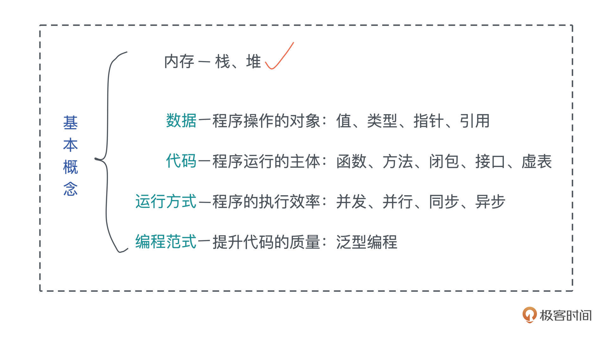
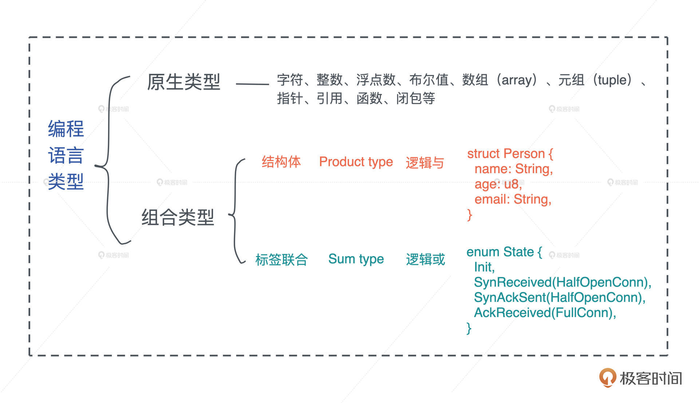
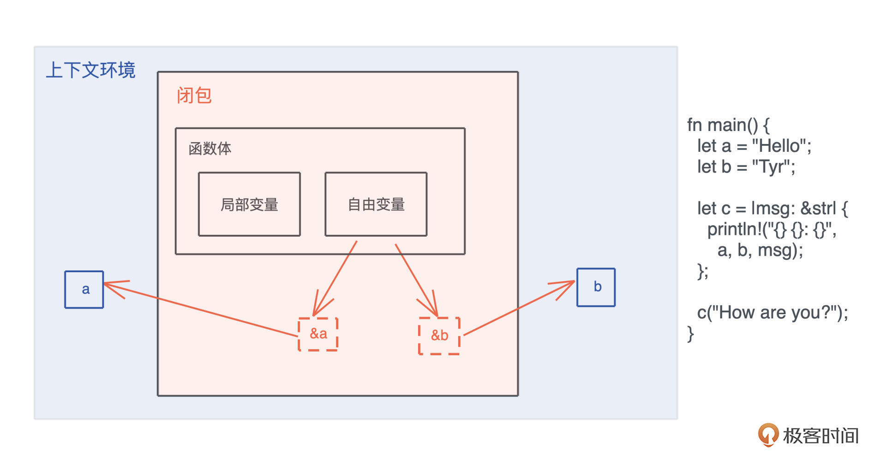
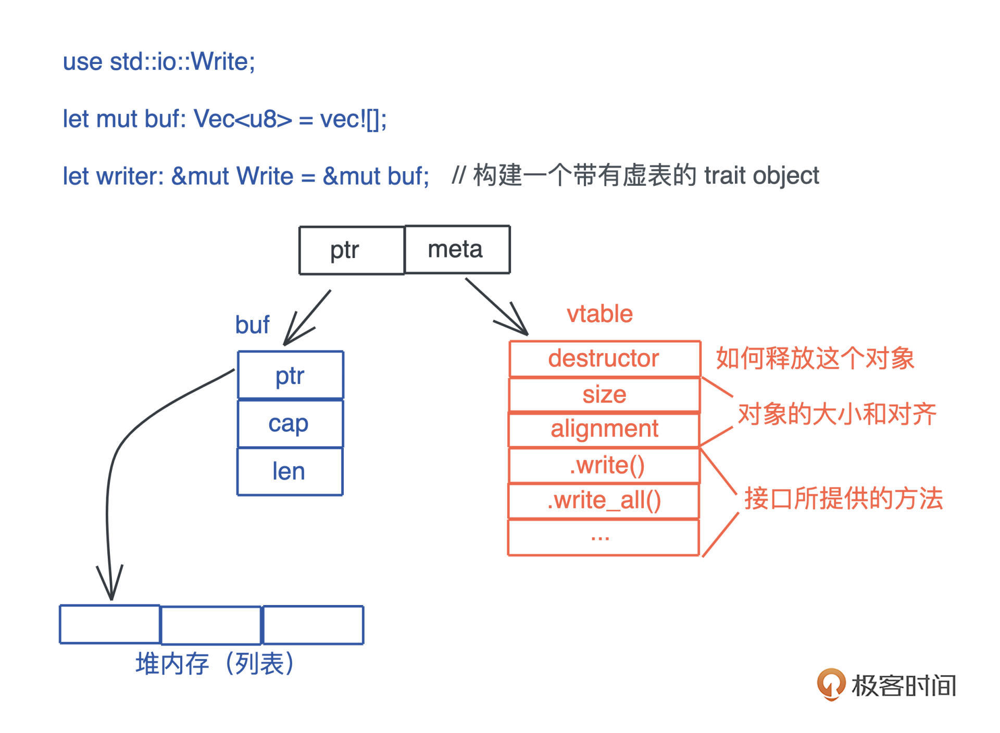
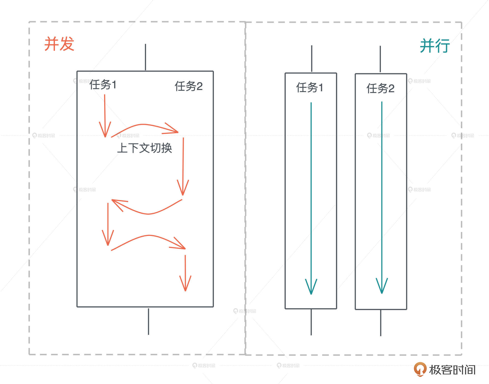
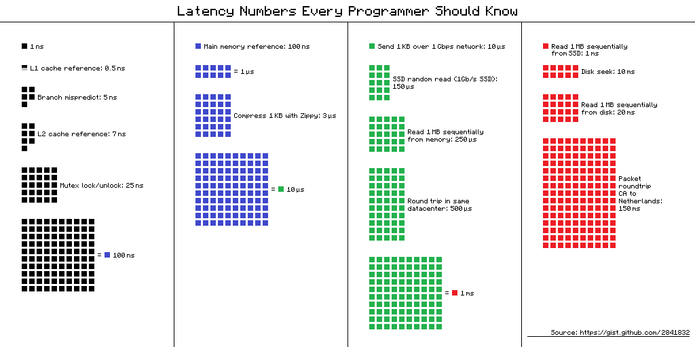
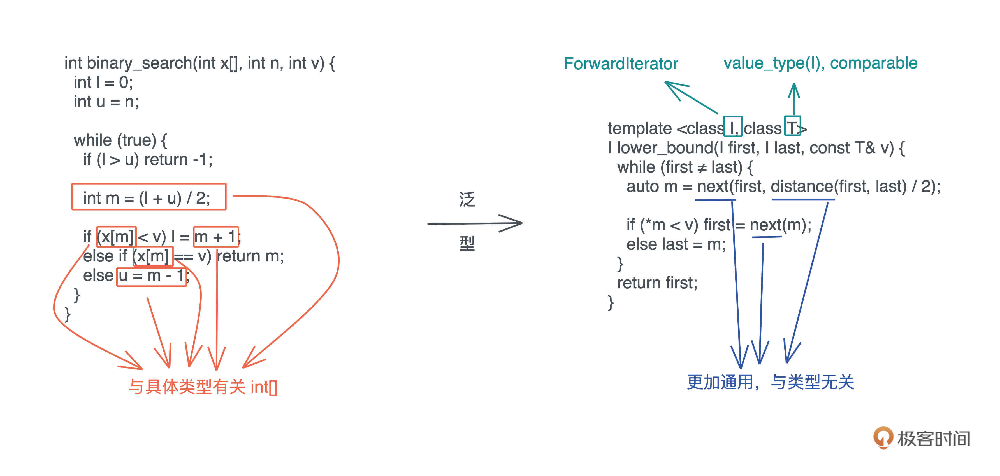
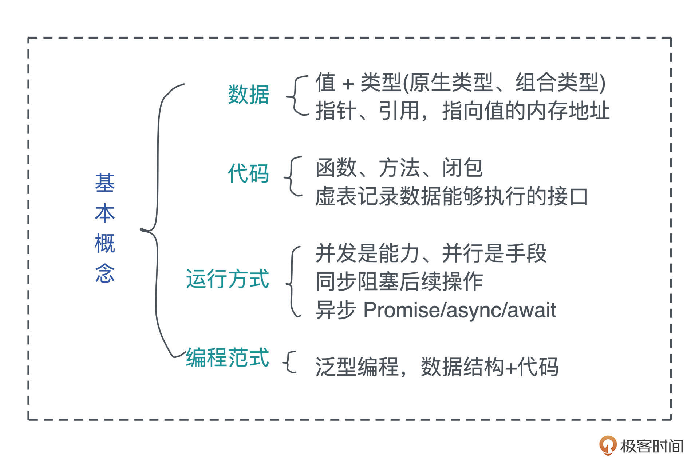

- 00 开篇词 让Rust成为你的下一门主力语言.md
- 01 内存：值放堆上还是放栈上，这是一个问题.md
- 02 串讲：编程开发中，那些你需要掌握的基本概念.md
- 03 初窥门径：从你的第一个Rust程序开始！.md
- 04 get hands dirty：来写个实用的CLI小工具.md
- 05 get hands dirty：做一个图片服务器有多难？.md
- 06 get hands dirty：SQL查询工具怎么一鱼多吃？.md
- 07 所有权：值的生杀大权到底在谁手上？.md
- 08 所有权：值的借用是如何工作的？.md
- 09 所有权：一个值可以有多个所有者么？.md
- 10 生命周期：你创建的值究竟能活多久？.md
- 11 内存管理：从创建到消亡，值都经历了什么？.md
- 12 类型系统：Rust的类型系统有什么特点？.md
- 13 类型系统：如何使用trait来定义接口？.md
- 14 类型系统：有哪些必须掌握的trait？.md
- 15 数据结构：这些浓眉大眼的结构竟然都是智能指针？.md
- 16 数据结构：Vec_T、&[T]、Box[T]_ ，你真的了解集合容器么？.md
- 17 数据结构：软件系统核心部件哈希表，内存如何布局？.md
- 18 错误处理：为什么Rust的错误处理与众不同？.md
- 19 闭包：FnOnce、FnMut和Fn，为什么有这么多类型？.md
- 20 4 Steps ：如何更好地阅读Rust源码？.md
- 21 阶段实操（1）：构建一个简单的KV server-基本流程.md
- 22 阶段实操（2）：构建一个简单的KV server-基本流程.md
- 23 类型系统：如何在实战中使用泛型编程？.md
- 24 类型系统：如何在实战中使用trait object？.md
- 25 类型系统：如何围绕trait来设计和架构系统？.md
- 26 阶段实操（3）：构建一个简单的KV server-高级trait技巧.md
- 27 生态系统：有哪些常有的Rust库可以为我所用？.md
- 28 网络开发（上）：如何使用Rust处理网络请求？.md
- 29 网络开发（下）：如何使用Rust处理网络请求？.md
- 30 Unsafe Rust：如何用C++的方式打开Rust？.md
- 31 FFI：Rust如何和你的语言架起沟通桥梁？.md
- 32 实操项目：使用PyO3开发Python3模块.md
- 33 并发处理（上）：从atomics到Channel，Rust都提供了什么工具？.md
- 34 并发处理（下）：从atomics到Channel，Rust都提供了什么工具？.md
- 35 实操项目：如何实现一个基本的MPSC channel？.md
- 36 阶段实操（4）：构建一个简单的KV server-网络处理.md
- 37 阶段实操（5）：构建一个简单的KV server-网络安全.md
- 38 异步处理：Future是什么？它和async_await是什么关系？.md
- 39 异步处理：async_await内部是怎么实现的？.md
- 40 异步处理：如何处理异步IO？.md
- 41 阶段实操（6）：构建一个简单的KV server-异步处理.md
- 42 阶段实操（7）：构建一个简单的KV server-如何做大的重构？.md
- 43 生产环境：真实世界下的一个Rust项目包含哪些要素？.md
- 44 数据处理：应用程序和数据如何打交道？.md
- 45 阶段实操（8）：构建一个简单的KV server-配置_测试_监控_CI_CD.md
- 46 软件架构：如何用Rust架构复杂系统？.md
- 加餐 Rust2021版次问世了！.md
- 加餐 代码即数据：为什么我们需要宏编程能力？.md
- 加餐 宏编程（上）：用最“笨”的方式撰写宏.md
- 加餐 宏编程（下）：用 syn_quote 优雅地构建宏.md
- 加餐 愚昧之巅：你的Rust学习常见问题汇总.md
- 加餐 期中测试：参考实现讲解.md
- 加餐 期中测试：来写一个简单的grep命令行.md
- 加餐 这个专栏你可以怎么学，以及Rust是否值得学？.md
- 大咖助场 开悟之坡（上）：Rust的现状、机遇与挑战.md
- 大咖助场 开悟之坡（下）：Rust的现状、机遇与挑战.md
- 特别策划 学习锦囊（一）：听听课代表们怎么说.md
- 特别策划 学习锦囊（三）：听听课代表们怎么说.md
- 特别策划 学习锦囊（二）：听听课代表们怎么说.md
- 用户故事 绝望之谷：改变从学习开始.md
- 用户故事 语言不仅是工具，还是思维方式.md
- 结束语 永续之原：Rust学习，如何持续精进？.md
02 串讲：编程开发中，那些你需要掌握的基本概念
你好，我是陈天。
上一讲我们了解了内存的基本运作方式，简单回顾一下：栈上存放的数据是静态的，固定大小，固定生命周期；堆上存放的数据是动态的，不固定大小，不固定生命周期。
今天我们来继续梳理，编程开发中经常接触到的其它基本概念。需要掌握的小概念点比较多，为了方便你学习，我把它们分为四大类来讲解：数据（值和类型、指针和引用）、代码（函数、方法、闭包、接口和虚表）、运行方式（并发并行、同步异步和 Promise/async/await ），以及编程范式（泛型编程）。

希望通过重温这些概念，你能够夯实软件开发领域的基础知识，这对你后续理解 Rust 里面的很多难点至关重要，比如所有权、动态分派、并发处理等。
好了，废话不多说，我们马上开始。
数据
数据是程序操作的对象，不进行数据处理的程序是没有意义的，我们先来重温和数据有关的概念，包括值和类型、指针和引用。
值和类型
严谨地说，类型是对值的区分，它包含了值在内存中的长度、对齐以及值可以进行的操作等信息。一个值是符合一个特定类型的数据的某个实体。比如 64u8，它是 u8 类型，对应一个字节大小、取值范围在 0～255 的某个整数实体，这个实体是 64。
值以类型规定的表达方式（representation）被存储成一组字节流进行访问。比如 64，存储在内存中的表现形式是 0x40，或者 0b 0100 0000。
这里你要注意，值是无法脱离具体的类型讨论的。同样是内存中的一个字节 0x40，如果其类型是 ASCII char，那么其含义就不是 64，而是 @ 符号。
不管是强类型的语言还是弱类型的语言，语言内部都有其类型的具体表述。一般而言，编程语言的类型可以分为原生类型和组合类型两大类。
原生类型（primitive type）是编程语言提供的最基础的数据类型。比如字符、整数、浮点数、布尔值、数组（array）、元组（tuple）、指针、引用、函数、闭包等。所有原生类型的大小都是固定的，因此它们可以被分配到栈上。
组合类型（composite type）或者说复合类型，是指由一组原生类型和其它类型组合而成的类型。组合类型也可以细分为两类：
- 结构体（structure type）：多个类型组合在一起共同表达一个值的复杂数据结构。比如 Person 结构体，内部包含 name、age、email 等信息。用代数数据类型（algebraic data type）的说法，结构体是 product type。
- 标签联合（tagged union）：也叫不相交并集（disjoint union），可以存储一组不同但固定的类型中的某个类型的对象，具体是哪个类型由其标签决定。比如 Haskell 里的 Maybe 类型，或者 Swift 中的 Optional 就是标签联合。用代数数据类型的说法，标签联合是 sum type。
另外不少语言不支持标签联合，只取其标签部分，提供了枚举类型（enumerate）。枚举是标签联合的子类型，但功能比较弱，无法表达复杂的结构。
看定义可能不是太好理解，你可以看这张图：

指针和引用
在内存中，一个值被存储到内存中的某个位置，这个位置对应一个内存地址。而指针是一个持有内存地址的值，可以通过解引用（dereference）来访问它指向的内存地址，理论上可以解引用到任意数据类型。
引用（reference）和指针非常类似，不同的是，引用的解引用访问是受限的，它只能解引用到它引用数据的类型，不能用作它用。比如，指向 42u8 这个值的一个引用，它解引用的时候只能使用 u8 数据类型。
所以，指针的使用限制更少，但也会带来更多的危害。如果没有用正确的类型解引用一个指针，那么会引发各种各样的内存问题，造成系统崩溃或者潜在的安全漏洞。
刚刚讲过，指针和引用是原生类型，它们可以分配在栈上。
根据指向数据的不同，某些引用除了需要一个指针指向内存地址之外，还需要内存地址的长度和其它信息。
如上一讲提到的指向 “hello world” 字符串的指针，还包含字符串长度和字符串的容量，一共使用了 3 个 word，在 64 位 CPU 下占用 24 个字节，这样比正常指针携带更多信息的指针，我们称之为胖指针（fat pointer）。很多数据结构的引用，内部都是由胖指针实现的。
代码
数据是程序操作的对象，而代码是程序运行的主体，也是我们开发者把物理世界中的需求转换成数字世界中逻辑的载体。我们会讨论函数和闭包、接口和虚表。
函数、方法和闭包
函数是编程语言的基本要素，它是对完成某个功能的一组相关语句和表达式的封装。函数也是对代码中重复行为的抽象。在现代编程语言中，函数往往是一等公民，这意味着函数可以作为参数传递，或者作为返回值返回，也可以作为复合类型中的一个组成部分。
在面向对象的编程语言中，在类或者对象中定义的函数，被称为方法（method）。方法往往和对象的指针发生关系，比如 Python 对象的 self 引用，或者 Java 对象的 this 引用。
而闭包是将函数，或者说代码和其环境一起存储的一种数据结构。闭包引用的上下文中的自由变量，会被捕获到闭包的结构中，成为闭包类型的一部分。
一般来说，如果一门编程语言，其函数是一等公民，那么它必然会支持闭包（closure），因为函数作为返回值往往需要返回一个闭包。
你可以看这张图辅助理解，图中展示了一个闭包对上下文环境的捕获。可以 在这里 运行这段代码：

接口和虚表
接口是一个软件系统开发的核心部分，它反映了系统的设计者对系统的抽象理解。作为一个抽象层，接口将使用方和实现方隔离开来，使两者不直接有依赖关系，大大提高了复用性和扩展性。
很多编程语言都有接口的概念，允许开发者面向接口设计，比如 Java 的 interface、Elixir 的 behaviour、Swift 的 protocol 和 Rust 的 trait。
比如说，在 HTTP 中，Request/Response 的服务处理模型其实就是一个典型的接口，我们只需要按照服务接口定义出不同输入下，从 Request 到 Response 具体该如何映射，通过这个接口，系统就可以在合适的场景下，把符合要求的 Request 分派给我们的服务。
面向接口的设计是软件开发中的重要能力，而 Rust 尤其重视接口的能力。在后续讲到 Trait 的章节，我们会详细介绍如何用 Trait 来进行接口设计。
当我们在运行期使用接口来引用具体类型的时候，代码就具备了运行时多态的能力。但是，在运行时，一旦使用了关于接口的引用，变量原本的类型被抹去，我们无法单纯从一个指针分析出这个引用具备什么样的能力。
因此，在生成这个引用的时候，我们需要构建胖指针，除了指向数据本身外，还需要指向一张涵盖了这个接口所支持方法的列表。这个列表，就是我们熟知的虚表（virtual table）。
下图展示了一个 Vec 数据在运行期被抹去类型，生成一个指向 Write 接口引用的过程：

由于虚表记录了数据能够执行的接口，所以在运行期，我们想对一个接口有不同实现，可以根据上下文动态分派。
比如我想为一个编辑器的 Formatter 接口实现不同语言的格式化工具。我们可以在编辑器加载时，把所有支持的语言和其格式化工具放入一个哈希表中，哈希表的 key 为语言类型，value 为每种格式化工具 Formatter 接口的引用。这样，当用户在编辑器打开某个文件的时候，我们可以根据文件类型，找到对应 Formatter 的引用，来进行格式化操作。
运行方式
程序在加载后，代码以何种方式运行，往往决定着程序的执行效率。所以我们接下来讨论并发、并行、同步、异步以及异步中的几个重要概念 Promise/async/await。
并发（concurrency）与并行（parallel）
并发和并行是软件开发中经常遇到的概念。
并发是同时与多件事情打交道的能力，比如系统可以在任务 1 做到一定程度后，保存该任务的上下文，挂起并切换到任务 2，然后过段时间再切换回任务 1。
并行是同时处理多件事情的手段。也就是说，任务 1 和任务 2 可以在同一个时间片下工作，无需上下文切换。下图很好地阐释了二者的区别：

并发是一种能力，而并行是一种手段。当我们的系统拥有了并发的能力后，代码如果跑在多个 CPU core 上，就可以并行运行。所以我们平时都谈论高并发处理，而不会说高并行处理。
很多拥有高并发处理能力的编程语言，会在用户程序中嵌入一个 M:N 的调度器，把 M 个并发任务，合理地分配在 N 个 CPU core 上并行运行，让程序的吞吐量达到最大。
同步和异步
同步是指一个任务开始执行后，后续的操作会阻塞，直到这个任务结束。在软件中，我们大部分的代码都是同步操作，比如 CPU，只有流水线中的前一条指令执行完成，才会执行下一条指令。一个函数 A 先后调用函数 B 和 C，也会执行完 B 之后才执行 C。
同步执行保证了代码的因果关系（causality），是程序正确性的保证。
然而在遭遇 I/O 处理时，高效 CPU 指令和低效 I/O 之间的巨大鸿沟，成为了软件的性能杀手。下图对比了 CPU、内存、I/O 设备、和网络的延迟：

我们可以看到和内存访问相比，I/O 操作的访问速度低了两个数量级，一旦遇到 I/O 操作，CPU 就只能闲置来等待 I/O 设备运行完毕。因此，操作系统为应用程序提供了异步 I/O，让应用可以在当前 I/O 处理完毕之前，将 CPU 时间用作其它任务的处理。
所以，异步是指一个任务开始执行后，与它没有因果关系的其它任务可以正常执行，不必等待前一个任务结束。
在异步操作里，异步处理完成后的结果，一般用 Promise 来保存，它是一个对象，用来描述在未来的某个时刻才能获得的结果的值，一般存在三个状态；
- 初始状态，Promise 还未运行；
- 等待（pending）状态，Promise 已运行，但还未结束；
- 结束状态， Promise 成功解析出一个值，或者执行失败。
如果你对 Promise 这个词不太熟悉，在很多支持异步的语言中，Promise 也叫 Future/Delay/Deferred 等。除了这个词以外，我们也经常看到 async/await 这对关键字。
一般而言，async 定义了一个可以并发执行的任务，而 await 则触发这个任务并发执行。大多数语言中，async/await 是一个语法糖（syntactic sugar），它使用状态机将 Promise 包装起来，让异步调用的使用感觉和同步调用非常类似，也让代码更容易阅读。
编程范式
为了在不断迭代时，更好地维护代码，我们还会引入各种各样的编程范式，来提升代码的质量。所以最后来谈谈泛型编程。
如果你来自于弱类型语言，如 C/Python/JavaScript，那泛型编程是你需要重点掌握的概念和技能。泛型编程包含两个层面，数据结构的泛型和使用泛型结构代码的泛型化。
数据结构的泛型
首先是数据结构的泛型，它也往往被称为参数化类型或者参数多态，比如下面这个数据结构：
struct Connection<S> {
io: S,
state: State,
}
它有一个参数 S，其内部的域 io 的类型是 S，S 具体的类型只有在使用 Connection 的上下文中才得到绑定。- 你可以把参数化数据结构理解成一个产生类型的函数，在“调用”时，它接受若干个使用了具体类型的参数，返回携带这些类型的类型。比如我们为 S 提供 TcpStream 这个类型，那么就产生 Connection 这个类型，其中 io 的类型是 TcpStream。
这里你可能会疑惑，如果 S 可以是任意类型，那我们怎么知道 S 有什么行为？如果我们要调用 io.send() 发送数据，编译器怎么知道 S 包含这个方法？
这是个好问题，我们需要用接口对 S 进行约束。所以我们经常看到，支持泛型编程的语言，会提供强大的接口编程能力，在后续的课程中在讲 Rust 的 trait 时，我会再详细探讨这个问题。
数据结构的泛型是一种高级抽象，就像我们人类用数字抽象具体事物的数量，又发明了代数来进一步抽象具体的数字一样。它带来的好处是我们可以延迟绑定，让数据结构的通用性更强，适用场合更广阔；也大大减少了代码的重复，提高了可维护性。
代码的泛型化
泛型编程的另一个层面是使用泛型结构后代码的泛型化。当我们使用泛型结构编写代码时，相关的代码也需要额外的抽象。
这里用我们熟悉的二分查找的例子解释会比较清楚：-

左边用 C 撰写的二分查找，标记的几处操作隐含着和 int[] 有关，所以如果对不同的数据类型做二分查找，实现也要跟着改变。右边 C++ 的实现，对这些地方做了抽象，让我们可以用同一套代码二分查找迭代器（iterator）的数据类型。
同样的，这样的代码可以在更广阔的场合使用，更简洁容易维护。
小结
今天我们讨论了四大类基础概念：数据、代码、运行方式和编程范式。

值无法离开类型单独讨论，类型一般分为原生类型和组合类型。指针和引用都指向值的内存地址，只不过二者在解引用时的行为不一样。引用只能解引用到原来的数据类型，而指针没有这个限制，然而，不受约束的指针解引用，会带来内存安全方面的问题。
函数是代码中重复行为的抽象，方法是对象内部定义的函数，而闭包是一种特殊的函数，它会捕获函数体内使用到的上下文中的自由变量，作为闭包成员的一部分。
而接口将调用者和实现者隔离开，大大促进了代码的复用和扩展。面向接口编程可以让系统变得灵活，当使用接口去引用具体的类型时，我们就需要虚表来辅助运行时代码的执行。有了虚表，我们可以很方便地进行动态分派，它是运行时多态的基础。
在代码的运行方式中，并发是并行的基础，是同时与多个任务打交道的能力；并行是并发的体现，是同时处理多个任务的手段。同步阻塞后续操作，异步允许后续操作。被广泛用于异步操作的 Promise 代表未来某个时刻会得到的结果，async/await 是 Promise 的封装，一般用状态机来实现。
泛型编程通过参数化让数据结构像函数一样延迟绑定，提升其通用性，类型的参数可以用接口约束，使类型满足一定的行为，同时，在使用泛型结构时，我们的代码也需要更高的抽象度。
这些基础概念，这对于后续理解 Rust 的很多概念至关重要。如果你对某些概念还是有些模糊，务必留言，我们可以进一步讨论。
思考题
（现在我们还没有讲到 Rust 的具体语法，所以你可以用自己平时常用的语言来思考这几道题，巩固你对基本概念的理解）
1.有一个指向某个函数的指针，如果将其解引用成一个列表，然后往列表中插入一个元素，请问会发生什么？（对比不同语言，看看这种操作是否允许，如果允许会发生什么）
2.要构造一个数据结构 Shape，可以是 Rectangle、 Circle 或是 Triangle，这三种结构见如下代码。请问 Shape 类型该用什么数据结构实现？怎么实现？
struct Rectangle {
a: f64,
b: f64,
}
struct Circle {
r: f64,
}
struct Triangle {
a: f64,
b: f64,
c: f64,
}
3.对于上面的三种结构，如果我们要定义一个接口，可以计算周长和面积，怎么计算？
欢迎在留言区分享你的思考。今天是我们打卡学习的第二讲，如果你觉得有收获，也欢迎你分享给你身边的朋友，邀TA一起讨论。
参考资料
Latency numbers every programmer should know，对比了 CPU、内存、I/O 设备、和网络的延迟
© 2019 - 2023 Liangliang Lee. Powered by gin and hexo-theme-book.